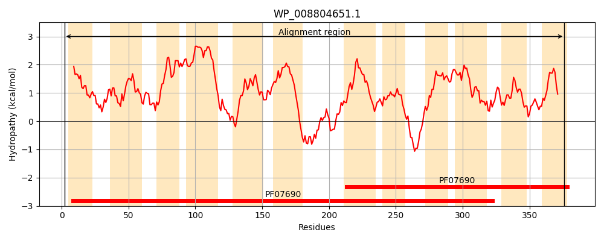
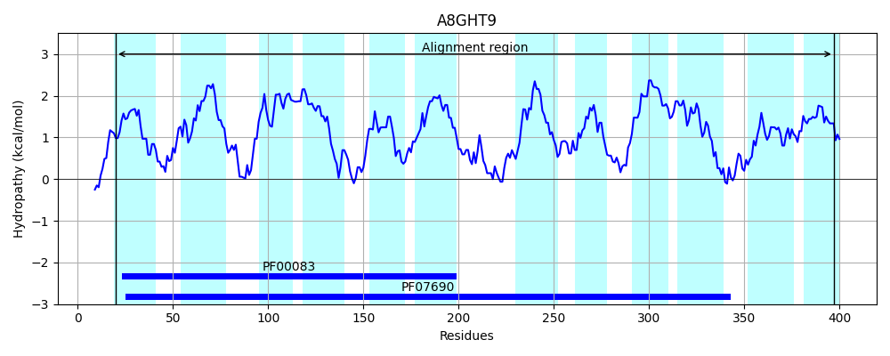
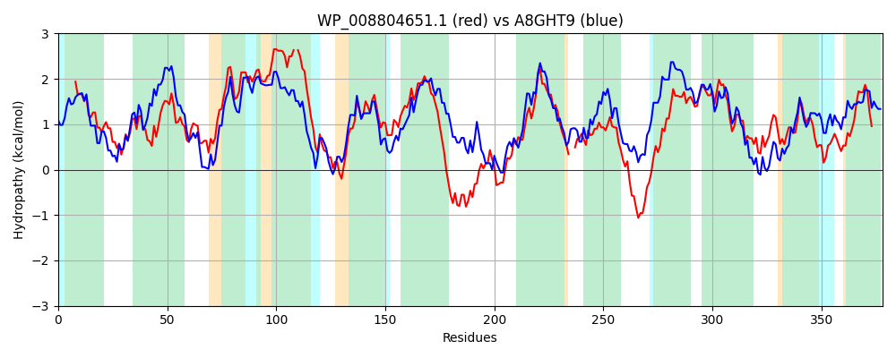

Hit Accession: A8GHT9
Hit TCID: 2.A.1.36.2
Hit Description: gnl|BL_ORD_ID|797 gnl|TC-DB|A8GHT9|2.A.1.36.2 Major facilitator superfamily MFS_1 OS=Serratia proteamaculans (strain 568) GN=Spro_3583 PE=4 SV=1
Mach Len: 378
e:0.000000
Query TMS Count : 12
Hit TMS Count: 12
TMS-Overlap Score: 11.200000
Predicted Substrates:None
BLAST Alignment:
Score: 838 , Bit scores: 327 bits, E-value: 8.2e-110, Alignment length: 378, Percentage identity: 47
Query: 2 LTAGITALFSLTCALAVANVYSAQPLLDSMAVSLKVSPGMIGSVVTATQAGYAIGLLFLVPLGDGLNRKYVVLTQLLLSVAALVVAGLSPNIAILLGAMLIVGLMAVVV-QLMVAWVAILATPQKRGQAVGTLTSGIVSGILLSRFISGAIADIAGWRAVYLTAACLMLLIAGVVWKVMPSPPPQPQKPTYLSLLKSVFQLYLTEPQLRKRGILALLIFAAFSMLWTTMVMPLTA--LSLSHTQTGMFGLAGIAGVLAASRAGRWADQGWAQRTTGLALALLALSWLPIACAETSLLWLIAGVIALDFAVQAVHVTNQSLIIAARPAAASRLVGAYMCFYSLGSAAGAIVATQLYSHWGWQAVCLAGAAVSACAFLVW 376
L A + L + A +VANVY AQPLLD++A +S +G V+T TQ G A+ LL +VPLGD +NR ++ Q LL + AL V G + + +LL ML+VGL+ + Q +VA+ A LA P +RG+ VG G+V G+LL+R +SGA+ADI GWRAVY +A + LL+ V+ +++P P P +Y +LL+S+ L + L+ RG+LALL+FAAFS+ W+ +V+PL+ + SH+ G FGL G G LAA RAG AD+G Q TG+ L LL L+WLP+ L WLI G++ LD A QA+HV NQSLI +A P A SRLVG YM FY++GS GA +T +++ GW VC GA+VS A L W
Sbjct: 20 LPASLVLLLAGASAFSVANVYYAQPLLDAIAQDFHISLASVGMVITVTQLGCALALLLVVPLGDRVNRHRLLAVQQLLLITALCVVGWANSSLLLLVGMLLVGLLGTAMTQGLVAFAATLAAPHERGRVVGAAQGGVVLGLLLARTLSGAMADIGGWRAVYFFSAAVTLLLLPVLARLLPVPDIAPSTLSYPALLRSMLTLLWRDRTLQIRGMLALLMFAAFSIFWSALVLPLSQAPFNFSHSVIGAFGLVGSVGALAAVRAGHLADRGLGQLATGICLLLLVLAWLPLGLLSYGLGWLIMGIVLLDLAGQAIHVLNQSLIFSAHPQAHSRLVGCYMLFYAVGSGLGAFASTHVFALAGWYGVCWLGASVSLAALLFW 397 | Protein Hydropathy Plots: |
|---|
|  |  |
Pairwise Alignment-Hydropathy Plot:
|
|---|
|  |